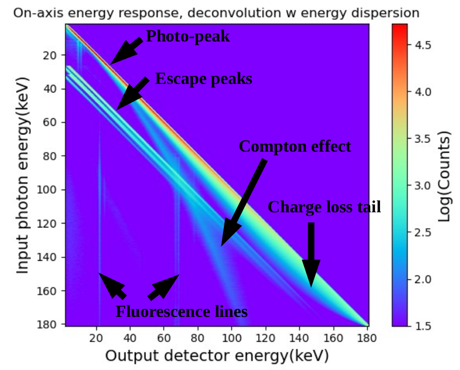
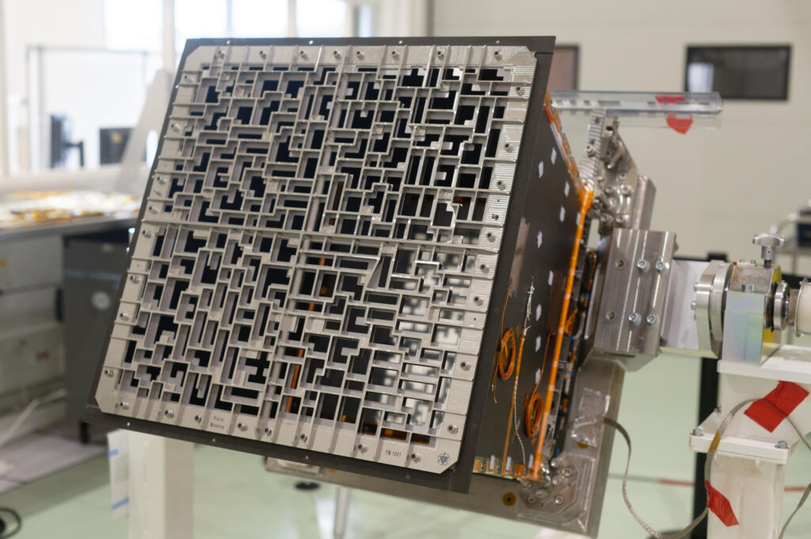
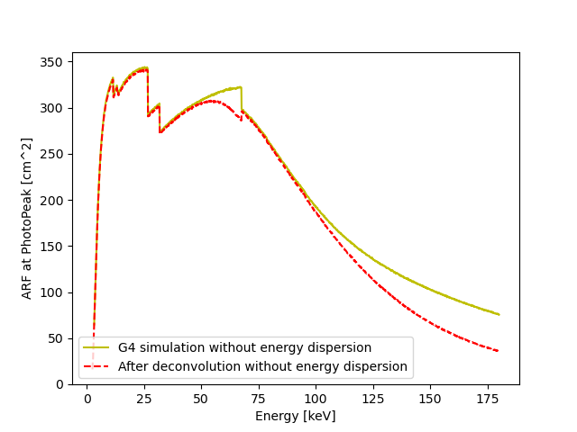

Calibration and scientific performance of ECLAIRs.
Ground calibration, response-file development and detector-performance
studies for the ECLAIRs gamma-ray instrument, together with scientific
supervision of early work on the detection of high-redshift gamma-ray
bursts with SVOM.
SVOM
ECLAIRs
Gamma-ray bursts
Calibration
Instrument response
Scientific software

ECLAIRs response matrix after deconvolution with the energy-dispersion
function. EIC technical documentation, M. Yassine, 2022.
Ground calibration and instrument response
I joined the SVOM team at IRAP to work on calibration and performance
activities for ECLAIRs, the wide-field coded-mask gamma-ray instrument
on board the SVOM mission.
I participated in the ground-calibration phase of the ECLAIRs flight
model, including studies of the detection plane and of the complete
camera configuration with its coded mask.
A major part of my work focused on scientific tools used to characterize
the instrument response and to generate the response files required for
the analysis of ECLAIRs observations.
Instrument calibration.
The objective was to characterize how the detector responds to incoming
photons and to provide reliable response information for subsequent
scientific spectral analysis.
Detector-response validation and scientific software
I developed analysis tools to study the homogeneity of detector
responses under different instrumental configurations. In particular,
I used statistical tests based on the Kolmogorov–Smirnov method to
compare detector-response distributions and identify possible
inconsistencies.
I also contributed to the preparation of software tools supporting
Burst Advocate activities, used for the scientific follow-up and
real-time monitoring of gamma-ray bursts detected by the mission.

ECLAIRs telescope of the SVOM mission.

Effective area at the photopeak after deconvolution compared with
the simulated effective area. EIC technical documentation,
M. Yassine, 2022.
Scientific supervision: high-redshift GRBs with ECLAIRs
During my time at IRAP, I also co-supervised a Master's research
internship focused on the detection of high-redshift gamma-ray bursts
with ECLAIRs. The project investigated how the instrumental response
and trigger capabilities of ECLAIRs influence the detection and
reconstruction of very distant GRBs.
This work initiated a research direction that was later continued and
developed further during a PhD. The study evolved toward a systematic
investigation of how GRBs observed at known redshifts would appear if
they occurred at increasingly large distances, and how instrumental
selection effects influence their measured properties.
My contribution was mainly through the initial supervision of the
project, scientific discussions, follow-up of the analysis and feedback
during the early stages of the work. The methodology and analysis were
subsequently extended further after this initial phase.
Related publication
2024
M. Llamas Lanza, O. Godet, B. Arcier, M. Yassine,
J.-L. Atteia and L. Bouchet —
High-z gamma-ray burst detection by SVOM/ECLAIRs:
Impact of instrumental biases on the bursts' measured properties
A&A, 685, A163 (2024) · Research originating from a Master's
internship I co-supervised at IRAP and later developed further
during subsequent doctoral work.